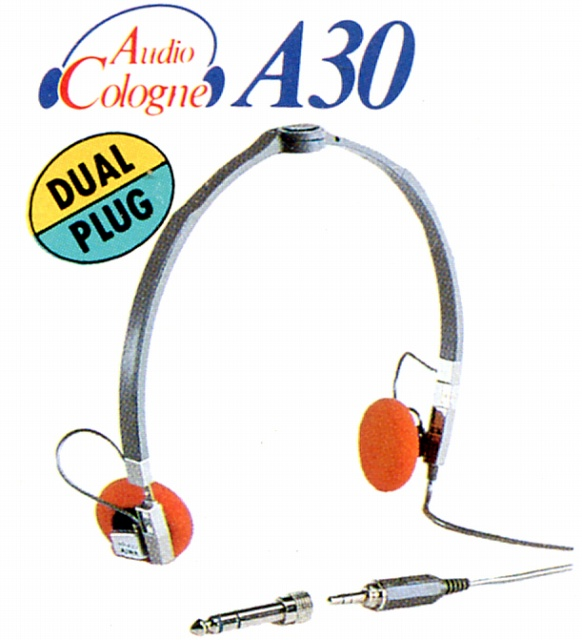
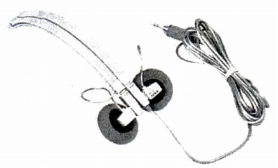

HP-A30


■価格 3,800円■型式 ダイナミック型■振動板 ■インピーダンス 29Ω■再生周波数帯域 20-22,000Hz■許容入力 ■感度 ■コード 2.2ｍミニプラグ■重量 35g(コード含まず）■発売 1982年■販売終了 1984〜85年頃■備考 愛称は「Audio Cologne」ミニ/標準アダプター付、折りたたみ可能音漏れ低減サイレントパッド（当社比 約10dB改善(7k〜10kHz))採用
アイワのインデックスへ